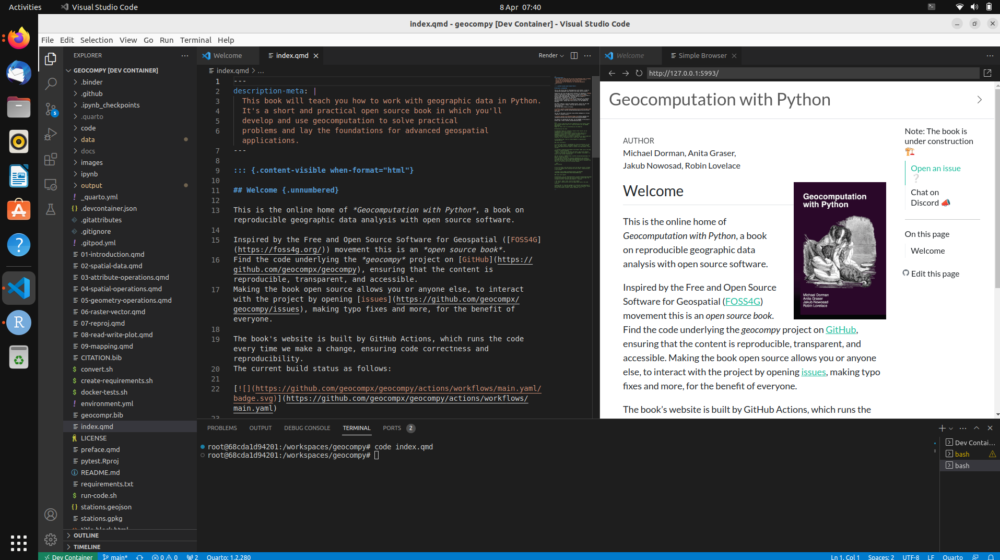

Setting up a new computer with Ubuntu to run open source software for research and Geocomputation
I recently got a new laptop. Being a long time Ubuntu user and fan, decided to get set-up with the user-friendly and long-established Ubuntu. This post is about how to get set-up with new software on Ubuntu. The main message: installing and setting-up software from the command line can save time and save your future self hours the next time you get a new computer. It is rather niche with a very specific target audience: people who have recently installed Ubuntu on their computer, who are looking to get a new computer and wondering what options are out there, and people who already have Ubuntu and want to get more software installed. After you have finished your set-up may look a bit like this.

If you want to jump to the code without reading my ramblings on open source software, and if you approve of Linus Torvald’s quip “talk is cheap, show me the code”, then feel free to skip to to the code and ignore my ramblings here ; ) https://github.com/Robinlovelace/install-geocomp-ubuntu
That repo was set-up around 7 years ago, inspired by a post on installing commonly needed GIS software on Ubuntu (see the first commit here). I decided to use my new laptop setup needs as an excuse to update the repo for using Ubuntu for research in the 2020s.
Why Ubuntu?
This article is about installing software on Ubuntu, not the operating system itself. However, it’s worth mentioning a few things about Ubuntu before diving into the software set-up that I use. There are many factors that should go into the decision of which operating system to use, although most people (except software developers) never even have the opportunity to make that decision as they are handed Windows on every computer they use (except when they use online services, most of which run on Linux systems set-up by developers running Linux, a notable example of companies not drinking their own champagne/dogfooding). That is not the topic of this blog post but worth stating the reasoning behind using Linux: from economic, educational, security and good vibes perspectives it’s a win, win, win, win. Include the user-friendliness and stability of Ubuntu and it’s a win x 5 situation!
If you don’t already use Linux and are curious about Ubuntu, I recommend checking out one of the great blogs on ‘dual booting’ linux on computers that currently have Windows
In fact, because it was from UK based Linux hardware specialists Entroware, it already had Ubuntu installed. The laptop in question: an Entroware Proteus 15”, which has great spec at a reasonable price. It’s also a looker as shown in the photo.

I may write a review of the Entroware Proteus at some point. For now, suffice to say that it’s one of the few off-the-shelf options for people wanting to buy a decent new laptop without having to pay for a clunky, resource-intensive operating system that suffers from various security vulnerabilities that Linux avoids.
Install key packages
After you have installed Ubuntu or bought a laptop that has it preinstalled, it’s time to get things set-up! The packages that are ‘key’ will vary from person to person. I’m confident that the list I have below will be useful to many people. If you like making maps, reproducible research, and using future-proof tools for data science, programming and geocomputation, I’m confident many will be useful. The guide below covers the following:
- GitHub’s CLI tool for command-line collaboration and code sharing
- R with access to pre-compiled packages, a powerhouse for statistical computing
- R packages for working with spatial data
- RStudio, a space-aged editor for R
- VS Code with extensions for R, Python, C/C++, Rust, Docker, and more
- Docker, which gives ultimate power and flexibility to install and run software
I’ve also created content for adding more amazing software, find those on the GitHub repo I set up to encourage contributions and to make the content more future proof:
- QGIS
- Rust
- Getting started with tools for geocomputation
- Other tools for boosting productivity and developer experience
So let’s dive in!
Fire up a terminal, e.g. with Ctl-Alt-T after booting Ubuntu, then enter the following.
GitHub’s gh CLI
GitHub has developed a command line interface (CLI) tool for enabling fast and intuitive interaction with the world’s premier code hosting platform. It’s a good place to start because it’s small, self-contained, and can be used to clone code repos like this one. Install it with the following cryptic commands from the project’s GitHub page:
type -p curl >/dev/null || (sudo apt update && sudo apt install curl -y)
curl -fsSL https://cli.github.com/packages/githubcli-archive-keyring.gpg | sudo dd of=/usr/share/keyrings/githubcli-archive-keyring.gpg \
&& sudo chmod go+r /usr/share/keyrings/githubcli-archive-keyring.gpg \
&& echo "deb [arch=$(dpkg --print-architecture) signed-by=/usr/share/keyrings/githubcli-archive-keyring.gpg] https://cli.github.com/packages stable main" | sudo tee /etc/apt/sources.list.d/github-cli.list > /dev/null \
&& sudo apt update \
&& sudo apt install gh -yTest to see if it works as follows:
# Log-in to GitHub from the command line
gh auth login
gh repo clone Robinlovelace/install-geocomp-ubuntu
cd install-geocomp-ubuntu
less README.mdSetting up Git
Setup git with the following commands
git config --global user.email "test@tilia.org.uk"
git config --global user.name "trachelium"R and RStudio
As Hadley Wickham, Chief Scientist at RStudio, rightly says about RStudio products, a great thing about R and RStudio them is that they ‘just work’:
I have become a huge fan of VS Code and installing it plus some amazing extensions is covered in the next section. VS Code is increasingly good with decent support for visualisations and, as the screenshot below shows, even now marks-up markdown outputs from Quarto documents. However, if you want to do standard data science things and create reproducible documents, R+RStudio is hard to beat, especially if you’re just starting out with data science. Install them with the following commands:
sudo apt update
sudo apt upgrade
sudo apt install -y --no-install-recommends software-properties-common dirmngr
# Add the keys
wget -qO- https://cloud.r-project.org/bin/linux/ubuntu/marutter_pubkey.asc | sudo tee -a /etc/apt/trusted.gpg.d/cran_ubuntu_key.asc
# add the R 4.0 repo from CRAN -- adjust 'focal' to 'groovy' or 'bionic' as needed
sudo add-apt-repository "deb https://cloud.r-project.org/bin/linux/ubuntu $(lsb_release -cs)-cran40/"
# You'll be asked to choose your geographical area
sudo apt install -y r-base r-base-core r-recommended r-base-dev
# Install PPA with pre-compiled packages
sudo add-apt-repository ppa:c2d4u.team/c2d4u4.0+Rapid install of R packages
A difference between R packages on Windows and Ubuntu is that by default Windows always installs binary versions of packages, meaning no compilation time. To speed-up installation of R packages you can add an Ubuntu repo that will allow you to install pre-compiled packages from the system command line. Although there are projects like r2u that give you binary packages with install.packages() I prefer the control of using the system command line for binaries and the R console for installing packages that want to be compiled, to avoid issues like this: https://github.com/rocker-org/rocker-versioned2/issues/631
Get a load of great R packages with the following commands:
# My own selection among 5000...
sudo apt install -y r-cran-rgl r-cran-rjags r-cran-snow r-cran-ggplot2 r-cran-igraph r-cran-lme4 r-cran-rjava r-cran-devtools r-cran-roxygen2 r-cran-rjava
sudo apt install r-cran-tidyverse
sudo apt install r-cran-sf r-cran-tmap r-cran-osmextract r-cran-mapview
# System deps for cartography
sudo apt install -y libgdal-dev libproj-dev libgeos-dev libudunits2-dev libv8-dev libnode-dev libcairo2-dev libnetcdf-dev
sudo apt install -y libglu1-mesa-dev freeglut3-dev mesa-common-dev
# Extra packages for image manipulation
sudo apt install -y libmagick++-dev libjq-dev libv8-dev libprotobuf-dev protobuf-compiler libsodium-dev imagemagick libgit2-dev
# rspatial
sudo apt install r-cran-sf r-cran-terra r-cran-mapedit r-cran-tmap r-cran-mapdeck r-cran-shinyjs
Rscript -e 'install.packages("languageserver")'RStudio: https://www.entroware.com/store/proteus
wget https://download1.rstudio.org/electron/jammy/amd64/rstudio-2023.03.0-386-amd64.deb
sudo dpkg -i rstudio*
rm -v rstudio*After installing RStudio you can open it by pressing the ‘Windows button’ and they typing RStudio. You should also be able to open it with the following command in the terminal:
rstudioAfter opening RStudio you can open the folder containing these instructions, or any folder, with the following command typed into the R console.
rstudioapi::openProject("~/Download/install-geocomp-ubuntu/")Also in RStudio you can commit and push changes to this or any repo as follows, starting by opening a terminal by clicking on the Terminal button or by typing the shortcut: Alt+Shift+M. You can also execute lines of code from the source editor in RStudio in the terminal by typing Ctrl+Alt+Enter, which will send the current line of code to the terminal.
git status
git commit -am 'Update instructions with info on using RStudio'VS Code
VS Code is a versatile and future-proof IDE. It is very, very popular, with the likes of Lex Fridman using it. You can install it with the following commands.
wget -qO- https://packages.microsoft.com/keys/microsoft.asc | gpg --dearmor > packages.microsoft.gpg
sudo install -o root -g root -m 644 packages.microsoft.gpg /etc/apt/trusted.gpg.d/
rm packages.microsoft.gpg
sudo add-apt-repository "deb [arch=amd64] https://packages.microsoft.com/repos/vscode stable main"
sudo apt update
sudo apt-get install code
code --install-extension ms-vscode-remote.remote-containersAfter it’s installed you may want to check out an intro video like this one: https://www.youtube.com/embed/yjeHLSrhPao
If you have any issues getting VS Code installed you may also want to check out this video that explains each step:
Executing bash commands in VS Code
A great feature of VS Code is that you can execute bash commands in the integrated terminal. Open the integrated terminal by typing the shortcut: Ctrl+J. Open a new terminal in VS code by typing the shortcut: Ctrl+backtick(`).
Executing code is made even easier by the Quarto extension for VS Code, which can be installed as follows from bash:
code --install-extension quarto.quartoAfter that extension has been installed you should be able to execute code in the integrated terminal by typing Ctrl+Enter in the source editor, as shown in the following screenshot:
Installing key VS Code extensions
code --install-extension reditorsupport.r
code --install-extension github.copilotCreating documents with Quarto
Install the Quarto command line tool:
wget https://github.com/quarto-dev/quarto-cli/releases/download/v1.3.313/quarto-1.3.313-linux-amd64.deb -O /tmp/quarto.deb
sudo dpkg -i /tmp/quarto.debInstall the Quarto R package:
Rscript -e "remotes::install_github('quarto-dev/quarto-r')"VS Code has a nice feature that enables you to develop inside a ‘devcontainer’. Devcontainers rely on Docker, which can be installed as follows:
Docker
Docker is a system platform that allows you to run applications in isolated environments called containers. Containers are similar to virtual machines, but they are more lightweight and efficient.
Docker allows you to run applications in a sandboxed environment, which is useful for reproducibility and security. In essence: run anything, anywhere.
Following instructions from https://docs.docker.com/engine/install/ubuntu/, first install the dependencies:
sudo apt-get install \
ca-certificates \
curl \
gnupg \
lsb-releaseThen follow these commands:
sudo mkdir -p /etc/apt/keyrings
curl -fsSL https://download.docker.com/linux/ubuntu/gpg | sudo gpg --dearmor -o /etc/apt/keyrings/docker.gpg
# Use the following command to set up the repository:
echo \
"deb [arch=$(dpkg --print-architecture) signed-by=/etc/apt/keyrings/docker.gpg] https://download.docker.com/linux/ubuntu \
$(lsb_release -cs) stable" | sudo tee /etc/apt/sources.list.d/docker.list > /dev/null
# Install Docker Engine
# Update the apt package index, and install the latest version of Docker Engine, containerd, and Docker Compose, or go to the next step to install a specific version:
sudo apt-get update
sudo apt-get install docker-ce docker-ce-cli containerd.io docker-compose-pluginPost installation steps for Docker
The following steps enable you to run docker without sudo. As outlined at https://docs.docker.com/engine/install/linux-postinstall/ this does have security implications so it may be unwise to run these commands on important production servers or critical infrastructure. For a personal laptop that does not contain sensitive information the risks are low.
sudo groupadd docker
# Add your user to the docker group:
sudo usermod -aG docker $USER
# Log out and log back in so that your group membership is re-evaluated.
# If you’re running Linux in a virtual machine, it may be necessary to restart the virtual machine for changes to take effect.
# You can also run the following command to activate the changes to groups:
newgrp docker
# Verify that you can run docker commands without sudo.
docker run hello-world
# If you initially ran Docker CLI commands using sudo before adding your user to the docker group, you may see the following error:
# WARNING: Error loading config file: /home/user/.docker/config.json -
# stat /home/user/.docker/config.json: permission denied
# This error indicates that the permission settings for the ~/.docker/ directory are incorrect, due to having used the sudo command earlier.
# To fix this problem, either remove the ~/.docker/ directory (it’s recreated automatically, but any custom settings are lost), or change its ownership and permissions using the following commands:
sudo chown "$USER":"$USER" /home/"$USER"/.docker -R
sudo chmod g+rwx "$HOME/.docker" -RRunning devcontainer with VS code
To check your code and docker installations worked you can try to reproduce Geocomputation with Python:
gh repo clone geocompx/geocompy
code geocompyIf you installed the remote-containers extension successfully, you should see a button with “Reopen in Container” in the bottom right of VS Code.
Click that button and you’ll see the devcontainer launch. If it works, you can try reproducing the entirety of the book from the command line with the following inside VS Code (you can launch the terminal by pressing Ctrl+J`):
quarto previewIf you see something like this, congratulations, you can develop almost anything in reproducible and easy-to-use devcontainers!

Syncthing is a great way to synchronize laptops, phones and other devices. I use it for syncing photos onto my laptop and into family photo albums, as shown below.
Summary
This blog post outlined my experiences getting set-up with a new Ubuntu installation and provided reproducible instructions for people who want to follow some of my steps. An important feature of open source software is choice.# There isn’t just one way to do things. That can be frustrating and daunting: so many decisions to make!
However, the act of making decisions is important. Choosing the set-up that works for you, rather than just following others, is highly recommended. So I encourage you to NOT follow all these instructions verbatim. Do your own research. Try things out, uninstalling things that don’t work for you, and keeping things that do. I outline some of the thinking around software choice here and plan to update that after the dust has settled around my updated set-up documented in this blog post and associated repo.
Ultimately, technology is about increasing what you can do. So the key thing is what you do with the technology. A decent computer with some of the open source tools outlined above is a powerful technology indeed. There are many other tools to install now and many other tools will be developed in the future. Chances are high that at least some of these tools, not covered here, will be of use to you.
Another thing about open source communities is their emphasis on sharing and learning, which is what inspired me to document the steps I took and share them with the world. Feel free fork my repo, tell me about issues and suggest changes via Pull Requests or in the comments below.
One thing that I’m not sure of: how best to get a good Python environment up-and-running? For the Geocomputation with Python book project I have found that micromamba works great, but that’s in Docker and I’m not sure of the best way to set-up my default Python instance on Ubuntu. Any suggestions welcome.
Thanks to everyone for building the amazing software installed in the course of this blog post and to everyone who has helped me with instructions, blog posts, answers on Q&A sites and more. To see a slightly more complete list, see the source code underlying this block post here: https://github.com/Robinlovelace/install-geocomp-ubuntu